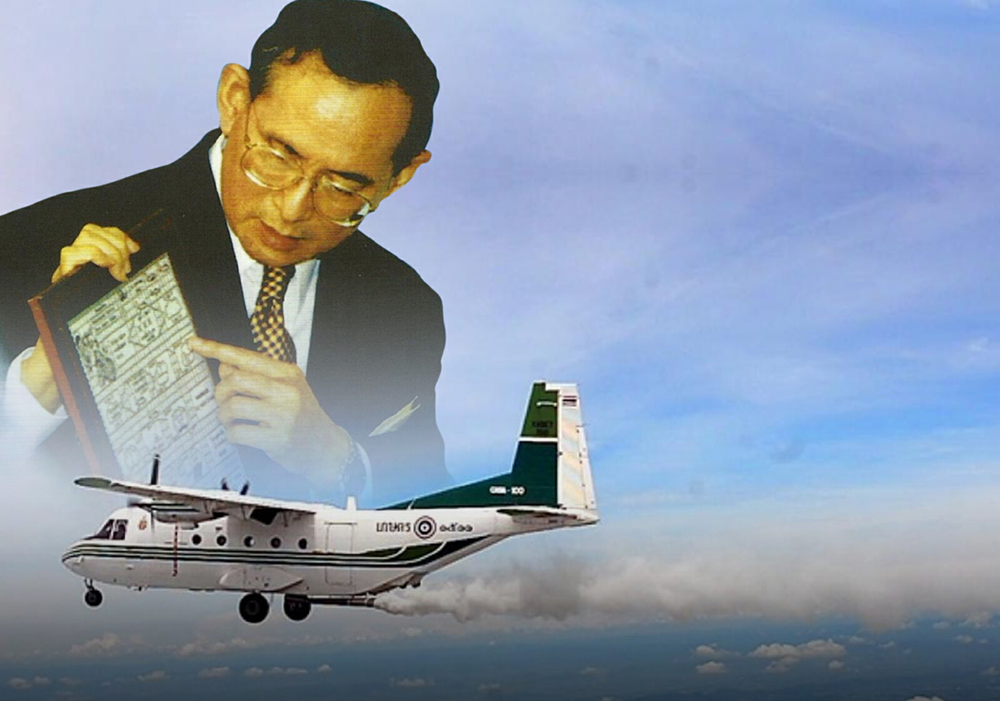
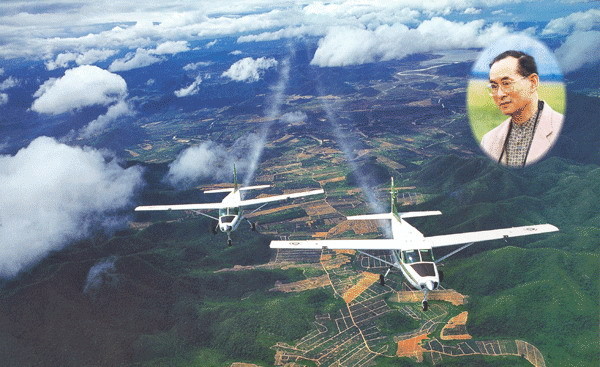
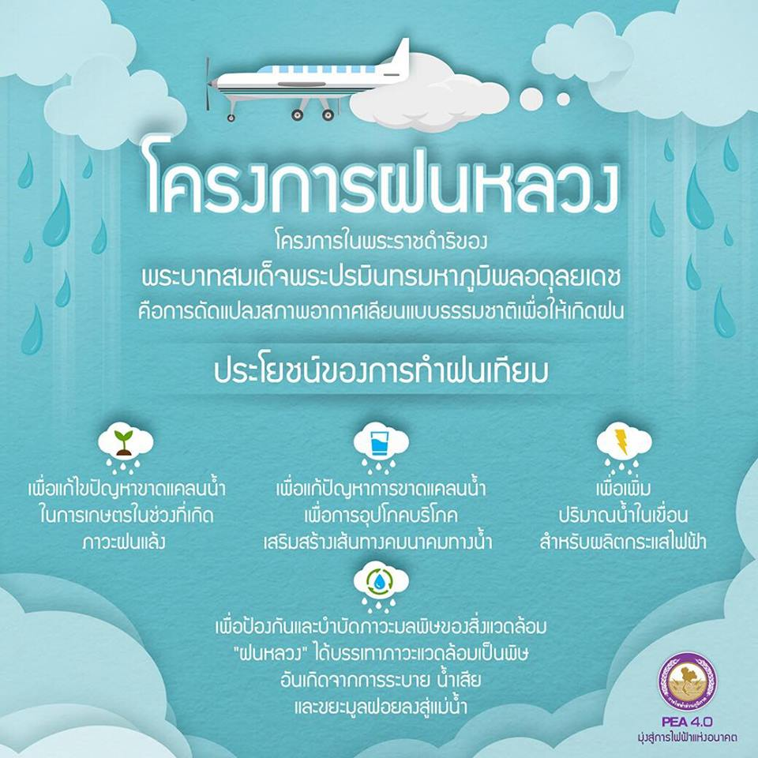

Home
โครงการฝนหลวง
โครงการแกล้งดิน
โครงการฝนหลวง, โครงการฝนหลวง


โครงการพระราชดำริฝนหลวง เกิดขึ้นจากพระราชดำริส่วนพระองค์ ในพระบาทสมเด็จพระบรมชนกาธิเบศร มหาภูมิพลอดุลยเดชมหาราช บรมนาถบพิตร เมื่อคราวเสด็จพระราชดำเนินเยี่ยมราษฎรในพื้นที่แห้งแล้งทุรกันดาร ๑๕ จังหวัด ในภาคตะวันออกเฉียงเหนือ ระหว่างวันที่ ๒-๒๐ พฤศจิกายน พ.ศ.๒๔๙๘ ในวันจันทร์ที่ ๑๔ พฤศจิกายน พ.ศ.๒๔๙๘ เสด็จพระราชดำเนินโดยรถยนต์เดลาเฮย์ ซีดานสีเขียว จากจังหวัดนครพนมไปจังหวัดกาฬสินธุ์ ผ่านจังหวัดสกลนครและ เทือกเขาภูพาน ได้ทรงรับทราบถึงความเดือดร้อน ทุกข์ยากของราษฎร และเกษตรกรที่ขาดแคลนน้ำอุปโภคบริโภค และการเกษตร เมื่อเสด็จพระราชดำเนินกลับถึงกรุงเทพมหานคร ทรงพระกรุณาโปรดเกล้าฯ ให้หม่อมราชวงศ์เทพฤทธิ์ เทวกุล วิศวกรและนักประดิษฐ์ควายเหล็กที่มีชื่อเสียงเข้าเฝ้าฯ แล้วพระราชทานแนวความคิดนั้นแก่หม่อมราชวงศ์เทพฤทธิ์ เทวกุล
จาก พ.ศ. ๒๔๙๘ เป็นต้นมา ทรงศึกษาค้นคว้า และวิจัยทางเอกสาร ทั้งด้านวิชาการอุตุนิยมวิทยา และการดัดแปรสภาพอากาศ ซึ่งทรงรอบรู้ และเชี่ยวชาญ เป็นที่ยอมรับทั้งใน และต่างประเทศ จนทรงมั่นพระทัย จึงพระราชทานแนวคิดนี้แก่ หม่อมราชวงศ์เทพฤทธิ์ เทวกุล ผู้เชี่ยวชาญในการวิจัยประดิษฐ์ทางด้านเกษตรวิศวกรรม ของกระทรวงเกษตรและสหกรณ์ขณะนั้น ในปีถัดมา และทรงพระกรุณาโปรดเกล้าโปรดกระหม่อม ให้หาลู่ทางที่จะทำให้เกิดการทดลองปฏิบัติการในท้องฟ้าให้เป็นไปได้
การทดลองในท้องฟ้าเป็นครั้งแรก จนถึงปี พ.ศ. ๒๕๑๒ กระทรวงเกษตรและสหกรณ์ ได้จัดตั้งหน่วยบินปราบศัตรูพืชกรมการข้าว และพร้อมที่จะให้การสนับสนุนในการสนองพระราชประสงค์ หม่อมราชวงศ์เทพฤทธิ์ เทวกุล จึงได้นำความขึ้นกราบบังคมทูลพระกรุณาทรงทราบว่า พร้อมที่จะดำเนินการตามพระราชประสงค์แล้ว ดังนั้นในปีเดียวกันนั้นเอง ทรงพระกรุณาโปรดเกล้าฯ ให้ทำการทดลองปฏิบัติการจริงในท้องฟ้าเป็นครั้งแรก เมื่อวันที่ ๑-๒ กรกฎาคม ๒๕๑๒

Privacy
|
Terms
|
FAQs
|
Help
©
MysteryCode
. All Rights Reserved. Designed by
Mystery Code